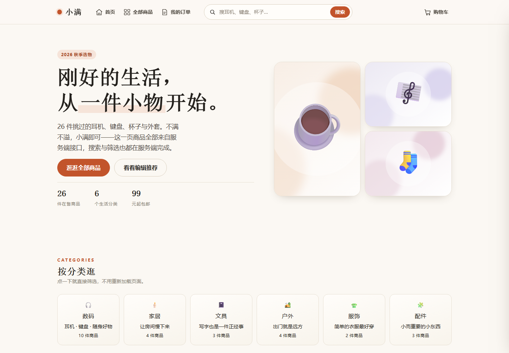
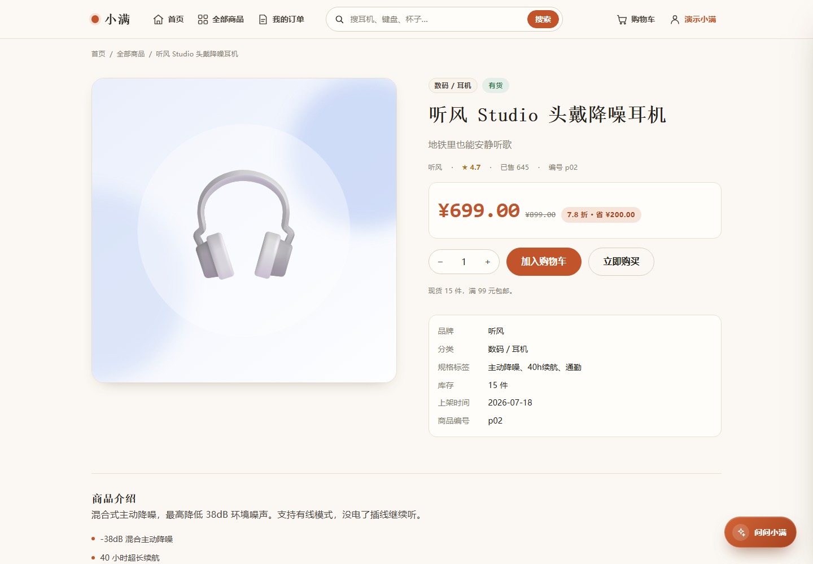
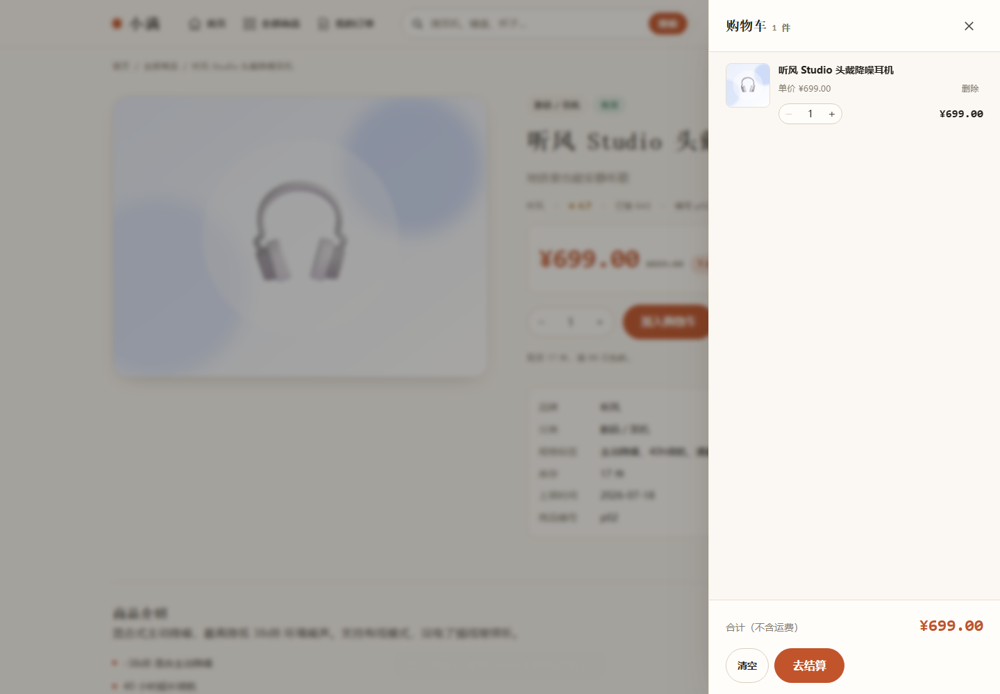
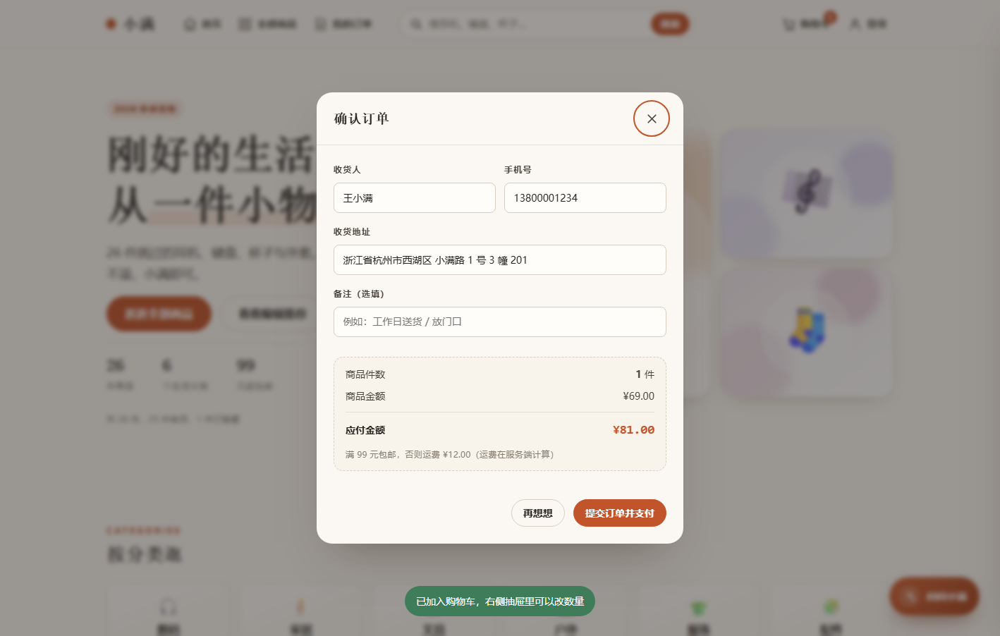
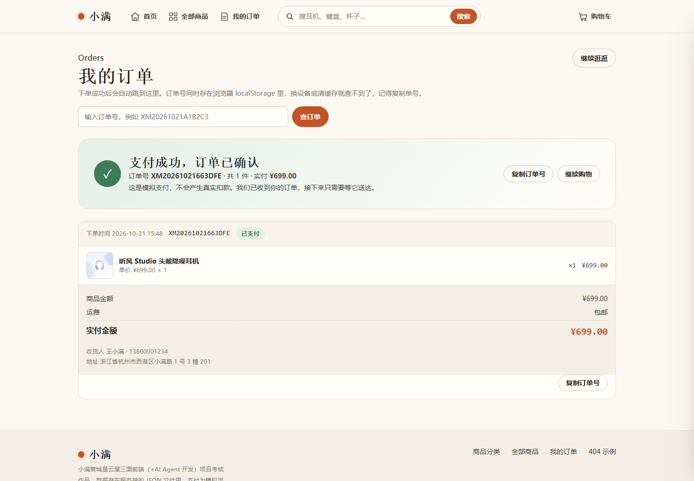
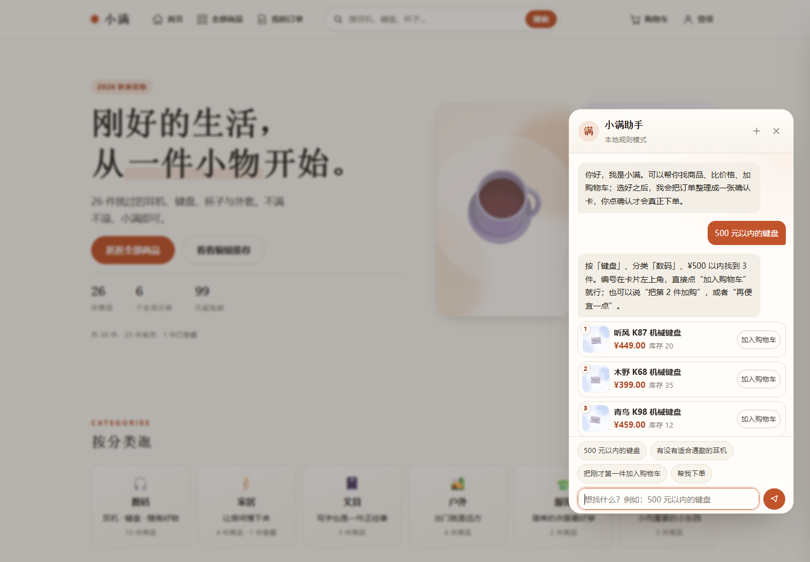
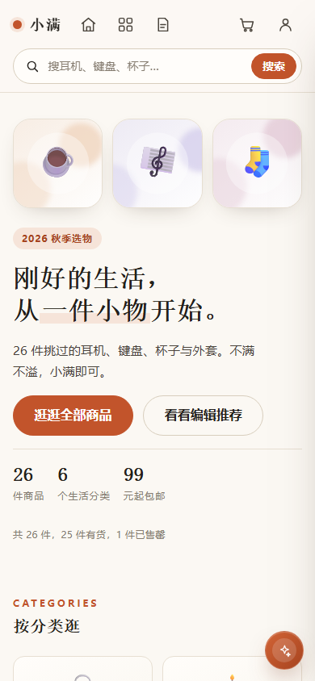

项目里有 50 多个前端文件、20 个后端文件。逐个读会迷路，所以这份说明书按“你想解决什么问题”来组织。
| 你的目的 | 看哪几节 | 读完后能得到什么 |
|---|---|---|
| 想赶紧跑起来看看 | 第 1、2 节 | 知道装什么、敲什么命令、打开哪个地址 |
| 想讲清前后端怎么配合 | 第 3、10 节 | 能画出一条请求从点击到渲染的完整路径 |
| 想弄懂每个文件 | 第 4–9 节 | 知道每个文件负责什么、为什么这样拆 |
| 想准备面试 / 答辩 | 第 14、15 节 | 知识点对照、演示顺序、常见追问 |
先记住一句话：浏览器只做三件事——收集用户操作、发请求、把返回的数据画出来。价格、库存、订单号、金额这些“算错了要出事”的东西，全部由服务端决定。
| 词 | 在这个项目里的意思 |
|---|---|
| 信封 | 后端固定返回 code / message / data 三个字段。前端只判断 code，错误提示直接用 message。 |
| 路由 | 一张“URL + 方法 → 函数”的映射表。/api/products 进来，就交给商品接口那个函数。 |
| 服务层 | 只写业务规则（筛选、算钱、扣库存），不碰 req / res，所以接口、测试、AI 工具都能调用它。 |
| 统一错误 | 业务代码只管 throw HttpError，router 负责翻译成状态码和 JSON，不用每处写响应。 |
| 发布订阅 | 购物车状态一变，就通知所有订阅者（角标、抽屉、弹窗）一起重绘，而不是互相调用。 |
| SSE | 服务器单向持续推送文本事件。AI 回答用它一段段“流”出来，比 WebSocket 轻。 |
cart-购物车服务.js、checkout-结算下单.js。在编辑器里搜索、在答辩时指给别人看，都不用先解释缩写。
为什么用原生三件套：这个项目只有 5 个页面、26 件商品，用框架反而要先解释构建工具、路由和状态库；用原生可以把注意力放在“请求怎么发、状态怎么变、页面怎么重绘”这三件最基础的事上。没有构建步骤也意味着：打开目录就能读，启动服务就能跑，答辩时不会卡在环境上。
首页浏览 → 搜索 / 筛选 → 商品详情 → 加入购物车 → 改数量 → 填收货信息 → 提交订单并模拟支付 → 查看订单结果。它不是几张静态页面的拼图，列表、详情、购物车、订单、登录态和 AI 助手都来自后端接口。
| 项目指标 | 数量 | 说明 |
|---|---|---|
| 页面 | 5 个 | 首页、全部商品、商品详情、我的订单、404 |
| 后端接口 | 24 个 | 商品 5、购物车 5、订单 5、认证 4、AI 助手 5 |
| 商品数据 | 26 件 / 6 类 | 价格 ¥29–699，库存、销量、标签各不相同 |
| 前端代码 | 14 JS / 8 CSS | 原生 ES Module，浏览器直接加载，不需要打包 |
| 后端代码 | 20 个 JS 文件 | 只用 Node 自带的 http / fs / path / crypto |
| 第三方依赖 | 0 个 | 没有 npm install，没有构建步骤 |
| 自动测试 | 46 条 | 37 条单元测试 + 9 条真实 HTTP 集成测试 |

环境要求只有一条：Node.js 18 或更高版本。项目没有 npm 依赖，所以不需要 npm install。
浏览器打开 http://127.0.0.1:3000 即可。换端口用环境变量 PORT，例如 PowerShell：$env:PORT=4000; npm start。
| 变量 | 默认值 | 作用 |
|---|---|---|
| PORT / HOST | 3000 / 127.0.0.1 | 监听端口与地址。部署到容器时 HOST 要改 0.0.0.0 |
| XM_DATA_DIR | server/data | JSON 数据目录；测试用临时目录隔离，避免污染演示数据 |
| AGENT_MODE | local | local 本地规则引擎；llm 调用大模型 |
| AGENT_API_KEY | 空 | 大模型密钥，只放服务端环境变量，绝不写进前端 |
| AGENT_BASE_URL | DeepSeek 兼容地址 | 任何 OpenAI 兼容的 /chat/completions 服务 |
| AGENT_MODEL | deepseek-chat | 模型名；换模型只改这一个变量 |
商品和分类是种子数据，不要删。购物车、订单、账号、会话、AI 对话都是运行时生成的，删掉后第一次写入会自动重建：
注意：这样不会把订单扣掉的库存加回来。要连库存一起恢复，用 Git 找回 products-商品数据.json 的初始版本。
✓ 终端打印启动地址，没有红色报错
✓ 打开首页能看到 26 件商品，不是空白骨架
✓ 浏览器 Network 里 /api/products 返回 200
✓ 访问 /api/health 返回 status: ok
✓ 加购后右上角角标变成 1
✓ 刷新页面购物车还在（cartId 存在 localStorage）
每一层只依赖下一层。读代码可以从 index 一路往下，也可以从任意接口反着找。
| 文件 / 目录 | 作用与关键点 |
|---|---|
| server/index-服务入口.js | 创建 HTTP 服务；/api 交给 router，其余走静态文件；requestId、安全头、/api/health、优雅退出 |
| server/router-迷你路由.js | add(method, pattern, handler) 注册；把 :id 转正则并提取 params；解析 query / body（1 MB）；捕获 HttpError 转 JSON |
| lib/response-统一响应格式.js | ok() / fail() 统一信封与状态码；HttpError 把“状态码 + 业务码 + 中文原因”打包 |
| lib/store-JSON数据存储.js | 表名到中文文件名的映射；读内存缓存、没有再读文件；写先改内存再落盘；EBUSY 自动重试 |
| lib/static-静态文件服务.js | 按 URL 找 public 下的文件；MIME、404 页面、304；path.resolve 防目录穿越 |
| lib/session-会话与Cookie.js | 解析 Cookie、取当前用户、签发 / 清除 xm_session；HttpOnly + SameSite=Lax，HTTPS 下加 Secure |
| services/catalog-商品查询服务.js | 关键词、分类、价格、五种排序、分页；分类计数；推荐与相关商品 |
| services/cart-购物车服务.js | 找车 / 建车、加购校验库存、改数量（0 即删除）、删除、清空、算小计与总额 |
| services/orders-订单服务.js | 下单重算金额、扣库存、清空购物车；订单号 XM + 日期 + 6 位十六进制；支付 / 取消 / 按用户查询 |
| services/auth-用户认证服务.js | 注册校验、scrypt 加盐哈希、登录、会话 token 的 SHA-256 摘要、7 天过期 |
| routes/products-商品接口.js | 5 个 GET：列表、分类、推荐、详情、相关 |
| routes/cart-购物车接口.js | 5 个：读车、加购、改数量、删单项、清空 |
| routes/orders-订单接口.js | 5 个：创建、列表、详情、支付、取消；归属校验 |
| routes/auth-认证接口.js | 4 个：注册、登录、退出、当前用户 |
| routes/agent-购物助手接口.js | 5 个：SSE 对话、确认下单、恢复会话、模式配置、工具清单 |
| agent/agent-购物助手.js | AI 总编排：选模式、调模型 / 本地规则、执行工具、写会话、记 Trace |
| agent/tools-工具集.js | 8 个工具的定义与执行；执行永不抛错，统一返回 ok / data / summary |
| agent/localbrain-本地规则引擎.js | 没有 Key 也能演示：意图识别、多步拆分、拒答、歧义澄清 |
| agent/llm-大模型适配器.js | OpenAI 兼容流式调用；解析 tool_calls；最多 4 轮“模型 → 工具 → 模型” |
| agent/conversation-会话存储.js | 会话消息、记忆（上次搜索 / 商品 / 分类）、待确认动作；最多 60 条消息 |
HTML 只搭骨架，CSS 按“基础 → 布局 → 组件 → 页面 → 补充”分层。页面文件只负责编排，样式改动尽量落在最靠近问题的那一层。
| 文件 | 作用与关键点 |
|---|---|
| index-首页.html | 导航、Hero、分类、本周热卖 8 件、编辑推荐、站内专题、侧拉购物车、结算弹窗、Toast、AI 入口 |
| products-全部商品页.html | 完整目录：关键词、分类、价格、排序、分页；筛选条件写进地址栏；复用同一套抽屉与结算弹窗 |
| product-商品详情页.html | 面包屑、封面、价格盒、数量步进器、规格表、卖点、相关推荐 |
| orders-我的订单页.html | 带 ?id= 显示单笔结果；不带显示历史订单；订单号搜索框 |
| 404-页面不存在.html | 静态错误页；提供回首页、看订单两个出口；搜索框同样可用 |
| css/base-设计变量与基础样式 | 颜色、字号、间距、圆角、阴影变量；reset；按钮、输入框、价格等基础类 |
| css/layout-导航与页面布局 | 吸顶导航、图标 hover、Hero 两栏、商品网格、分类网格、页脚、四个断点 |
| css/components-通用组件样式 | 卡片、角标、标签、筛选 chip、抽屉、Toast、弹窗、分页、空态、骨架屏 |
| css/pages-各页面专属样式 | 首页 Hero 强调、详情两栏、价格盒、规格表、订单卡、404 大字 |
| css/extra-结算与补充样式 | 结算金额框、加购动画、订单操作按钮、免运费进度条、窄屏补充 |
| css/auth-登录与账号样式 | 登录 / 注册页签、账号菜单、错误提示 |
| css/agent-购物助手样式 | 悬浮按钮、遮罩、400×720 面板、消息、商品卡、确认卡、Trace |
| css/catalog-全部商品页样式 | 目录页标题、筛选条、结果元信息、空态；640px 下排序下拉占满 |
| assets/products/ | 26 张商品封面 SVG，由脚本按分类配色生成，路径写回商品 JSON |
· 想改搜索 / 筛选 / 排序 → 先看 services/catalog，再看 js/products 怎么把条件拼成请求。首页只负责热卖与推荐。
· 想改加购 / 数量 / 删除 → 先看 services/cart，再看 js/cartdrawer 怎么渲染。
· 想改金额 / 运费 / 下单规则 → 先看 services/orders，再看 js/checkout 怎么提交。
· 想改颜色 / 间距 / 卡片长相 → 先改 css/base 变量，再改 components；页面专属的才动 pages。
实在找不到时，打开浏览器 Network 面板，点一次页面上的操作，看请求路径（例如 /api/cart/items），再到 routes 目录搜这个路径，就能顺着找到对应的 service。
按“工具 → 数据 → 组件 → 页面”组织。页面文件只负责编排，请求、状态、DOM 工具都可以被多个页面复用。
| 模块 | 职责与关键点 |
|---|---|
| api-请求封装.js | 所有 fetch 集中在这里：拼查询参数、12 秒 AbortController 超时、解析 JSON、code 不为 0 抛 ApiError、网络错误转成中文；按资源分成 products / cart / orders / auth / agent；formatMoney 统一金额格式 |
| store-购物车状态.js | cartId 存在 localStorage 的 xm_cart_id；state 保存购物车快照；subscribe 立即回调一次并持续通知；busy 列表防止同一商品重复点击；add / updateQuantity / remove / clear 都是“先请求、成功后再更新状态” |
| ui-通用界面工具.js | $ / $$ 选择器、escapeHtml 防注入、debounce、内联 SVG 图标、toast、抽屉与弹窗开关、Esc 和遮罩关闭、搜索框绑定、购物车角标绑定 |
| auth-登录状态.js | AuthStore：init 拉 /api/auth/me；login / register / logout；订阅者收到 {user, ready, busy} |
| authui-登录注册弹窗.js | 注入 #authModal 和 #accountMenu；登录 / 注册页签、表单校验、错误提示；登录后派发 auth:change |
| card-商品卡片.js | 卡片 HTML 模板，首页、推荐位、详情页相关推荐共用；包含封面、库存角标、分类与品牌、标题、简介、标签、价格与原价、加购按钮；售罄时禁用按钮 |
| home-首页逻辑.js | 首页入口：并行加载分类、推荐、热卖；分类卡与专题位跳目录页；最近看过；搜索框带关键词跳目录页 |
| products-全部商品页逻辑.js | 目录页入口：state 与地址栏同步；关键词、分类、价格、排序、分页；requestSeq 防旧请求覆盖；骨架屏、空态、错误提示；加购复用 cartStore |
| product-详情页逻辑.js | 从地址栏读 id；并行加载详情与相关推荐；渲染价格、折扣、库存文案、规格、介绍段落、卖点；数量步进器；加入购物车与立即购买（直接开结算） |
| cartdrawer-购物车抽屉.js | 订阅 cartStore 渲染抽屉；事件委托处理加、减、删除、手动输入；空状态与底部合计；免运费进度；清空；去结算时关闭抽屉并打开结算弹窗 |
| checkout-结算下单.js | 校验收货人、手机号、地址；计算并展示商品金额、运费、应付金额；POST 创建订单 → 延迟 900ms 模拟支付 → 记录订单号 → 清空本地购物车 → 跳结果页；提交中禁用按钮防止重复下单 |
| orders-订单页逻辑.js | 有 id 时查单笔订单并渲染成功 / 失败 Hero 与明细；没有 id 时登录用户走列表接口、游客读 localStorage 逐个查询；支付、取消、复制订单号；订单号搜索 |
| agent-购物助手面板.js | 创建悬浮按钮与面板；用 fetch 读取 SSE 流；渲染文字、商品卡、确认卡、结果卡、Trace；会话 ID 存 localStorage；Esc / 焦点陷阱 / 锁定背景滚动；账号切换自动新会话 |
| 404-页面逻辑.js | 只接管 404 页搜索框；独立文件是为了满足生产环境 CSP 不允许内联脚本 |
api 不依赖任何业务；store 依赖 api；ui 不碰业务；card 依赖 api 与 ui；cartdrawer 依赖 store、ui；checkout 依赖 store、api、ui；home / products / product / orders 是页面入口，负责把上述模块组装起来。
这是整个项目最重要的一张图。看懂它，就看懂了前后端如何配合。以“全部商品页加载列表”为例：
js/products-全部商品页逻辑.js 读取筛选条件，调用 api.products.list()，同时先画骨架屏。
js/api-请求封装.js 把 state 拼成查询字符串，fetch 发请求，带 12 秒超时。
server/index-服务入口.js 看到 /api 前缀，交给 router；否则读 public 下的静态文件。
server/router-迷你路由.js 匹配路径、解析 query / body / params。
routes/products-商品接口.js 只做一件事：把 query 交给 service。
services/catalog-商品查询服务.js 关键词 → 分类 → 价格 → 排序 → 分页，返回 list / total / filters。
lib/store-JSON数据存储.js 从内存缓存或 JSON 文件取商品。
逐层返回，最外层包成 { code: 0, message: "ok", data: {...} }。
js/api-请求封装.js 看到 code === 0 就把 data 交给页面；home 生成卡片 HTML，替换骨架屏。页码、结果数量同时出现。
| 约定 | 为什么 |
|---|---|
| 统一信封 | 不管成功失败都返回 code / message / data。前端只判断 code，错误提示直接用 message，不需要为每个接口写一套解析。 |
| 统一错误 | service 发现问题就 throw new HttpError(状态码, 业务码, 中文原因)；router 捕获后转成 JSON。业务代码不用关心 res 怎么发。 |
| 分层不越界 | routes 不写业务，services 不碰 req / res，lib 不认识商品和订单。所以换一种前端、加 AI 工具，都可以复用 services。 |
答辩时可以这样讲：“前端不做价格计算。它只把用户选了什么发过去，后端用商品表重新算一遍，再把结果画回来。这样即使有人改前端代码，也改不了订单金额。”
注册、登录、退出都走真实接口；登录态用 HttpOnly Cookie 维持，刷新页面不会丢。订单跟着账号走，换设备登录也能看到。
前端校验用户名 3–20 位、密码 6–32 位、两次密码一致，POST /api/auth/register。
服务端用 crypto.scryptSync(password, salt, 64) 生成 64 字节哈希，盐和哈希一起存；数据库里没有明文密码。
生成 32 字节随机 token，只把它的 SHA-256 摘要存进 sessions 表；原始 token 放进 xm_session Cookie，7 天过期。
浏览器自动带上 xm_session；router 在 ctx.user 里放当前用户，接口按需取用。
页面启动时 GET /api/auth/me；有用户就把顶栏“登录”换成昵称和账号菜单，并派发 auth:change。
| 方法 / 路径 | 作用 |
|---|---|
| POST /api/auth/register | 注册并自动登录 |
| POST /api/auth/login | 校验密码，签发新会话 |
| POST /api/auth/logout | 删除会话、清 Cookie |
| GET /api/auth/me | 返回当前用户或 null |
· Cookie 用 HttpOnly，JS 读不到，降低 XSS 窃取风险。
· SameSite=Lax，跨站表单提交默认不带 Cookie。
· 反向代理传来 X-Forwarded-Proto: https 时才加 Secure。
· 登录失败统一提示“用户名或密码不正确”，不告诉攻击者哪一项错了。
· 会话表只存 token 摘要，即使数据文件泄露也拿不到可用 token。
| 场景 | 服务端怎么做 | 前端怎么显示 |
|---|---|---|
| 已登录 | 下单写入 userId；GET /api/orders 只返回自己的订单 | 订单跟着账号走，换设备也能看到 |
| 未登录 | 订单只按订单号查询；详情 / 支付 / 取消仍校验归属 | 订单号存在本机 localStorage，最多 20 个 |
| 看别人的单 | 订单有 userId 且不等于当前用户 → 403 / 40301 | 提示“这个订单不属于当前账号” |
| 没登录查列表 | 401 / 40102 | 空态里给“登录 / 注册”按钮 |
不先讲代码，先看用户实际看到什么。这四张图对应后面反复提到的四条链路。






提供数据、维护状态、做校验和计算。
前端传来的价格一律不信，订单金额一定用服务端数据重算。
商品
筛选、排序、分页、推荐。只读，不改状态。
购物车
服务端保存，每次操作返回整车快照；加购校验库存。
订单
下单重算金额、扣库存、清空购物车；状态机 pending / paid / cancelled。
账号
密码哈希、会话、订单归属；未登录和登录走不同查询路径。
| 文件 | 负责什么 |
|---|---|
| catalog-商品查询服务.js | 关键词同时匹配名称、品牌、简介、标签、搜索词；分类与价格可叠加；五种排序；pageSize 上限 60；分类带数量；推荐按销量 |
| cart-购物车服务.js | getOrCreate 生成 cart_ + 12 位十六进制；decorate 拼商品快照并算小计；加购前校验库存；数量 0 等于删除；单件上限 99 |
| orders-订单服务.js | 重新读购物车、校验商品与库存、按数据库单价重算；满 99 免运费，否则 12 元；订单号 XM + 日期 + 6 位大写十六进制；支付 / 取消 / 按用户查 |
| auth-用户认证服务.js | 用户名和密码规则；scrypt 加盐；重复用户名 409；登录失败 401；会话 7 天 |
| agent-购物助手（agent 目录） | 不直接写数据库，全部通过上面四个 service 的工具包装执行；写操作只生成待确认动作 |
| 状态 | 什么时候 | 库存 | 能否再操作 |
|---|---|---|---|
| pending | 创建订单、未支付 | 已扣减，销量已加 | 可支付、可取消 |
| paid | 模拟支付成功 | 保持扣减 | 不能重复支付，不能取消 |
| cancelled | 用户取消待支付订单 | 加回库存、减回销量 | 不能再支付 |
取消订单回滚库存是后补的 bug 修复：早期版本只改状态，库存会永久少一件。现在 cancel() 会同时回滚 stock 与 sales，重复取消返回 409 / 40906。
五个页面都遵循同一个原则：HTML 里放结构和空的容器，具体内容由 JS 请求接口后填进去。所以查看源代码看不到商品，但打开页面能看到 26 件——这正是“数据不能硬编码在前端”的体现。
| 从 | 到 |
|---|---|
| 首页 / 导航 | 搜索、分类卡、“查看全部”都跳 products-全部商品页.html，筛选条件写进查询串 |
| 商品卡片 | product-商品详情页.html?id=p02；详情页返回面包屑，搜索回目录页 |
| 加入购物车 | 不跳页，右侧抽屉滑出；点“去结算”开弹窗 |
| 提交成功 | 跳 orders-我的订单页.html?id=订单号；订单号同时写 localStorage |
| AI 助手 | 悬浮按钮打开面板；确认下单后给“去支付 / 查看订单”入口 |
| 文件 | 内容 |
|---|---|
| base-设计变量与基础样式 | 全部设计变量（暖白底、陶土红、墨色文字、灰线、成功 / 警告 / 危险色、字号 clamp、间距刻度、圆角、阴影）；reset；按钮、输入框、价格等基础类 |
| layout-导航与页面布局 | 容器宽度；吸顶导航；图标 hover 上浮变色；Hero 两栏与拼贴；区块标题；商品网格 auto-fill minmax；分类网格；页脚；960 / 860 / 640 / 400 断点 |
| components-通用组件样式 | 商品卡片、库存角标、标签、筛选 chip、分类卡、侧拉抽屉与遮罩、购物车行与步进器、Toast、弹窗、分页、空态、骨架屏、面包屑、评分、状态徽标 |
| pages-各页面专属样式 | 首页 Hero 标题强调与推荐卡；详情页两栏、价格盒、规格表、卖点列表；订单页结果 Hero、订单卡、金额行；404 大字 |
| extra-结算与补充样式 | 结算金额框、加购成功的小动画、订单操作按钮、免运费进度条、窄屏补充规则 |
商品网格用 repeat(auto-fill, minmax(min(100%, 240px), 1fr))，宽度不够自动减列。
clamp() 让标题在手机和桌面之间平滑变化，避免某一档突然挤爆。
960 详情改单列，860 导航只留图标，640 订单项换行，400 再收紧间距。
用户的每一句话，先由 agent 判断是“查商品、改购物车、下单、查订单”中的哪一种；需要数据时调用工具，工具再调用前面那些 service。AI 不直接读写 JSON，也不自己算钱。
| 模式 | 怎么触发 | 特点 |
|---|---|---|
| 本地规则 | 默认；或 AGENT_MODE=local | 不需要 Key、不联网、响应稳定；能覆盖搜索、比价、加购、下单、订单查询、拒答与澄清。适合演示和自动测试。 |
| 大模型 | AGENT_MODE=llm 且配置 AGENT_API_KEY | 理解更自由的说法；通过 function calling 调同一批工具；最多 4 轮“模型 → 工具 → 模型”。没有 Key 时自动降级本地。 |
| 事件 | 内容 |
|---|---|
| meta | 会话 id、模式、是否登录 |
| delta | 一小段文字，前端追加到气泡里，形成打字机效果 |
| products | 商品卡数据（最多 8 件），前端渲染成可加购的卡片 |
| cart | 购物车最新快照，前端同步角标与抽屉 |
| action | 待确认的下单动作：商品、数量、金额、收货信息表单 |
| notice / error | 降级提示、需要澄清、超范围、工具失败 |
| done | 本轮结束，带 Trace、耗时、cartId；前端据此恢复滚动位置 |
工具是 AI 与业务之间唯一的通道。每个工具都写明参数、做参数校验、返回统一结构；模型只能“请求”业务动作，不能绕过规则。
| 工具 | 参数 | 作用 |
|---|---|---|
| search_products | keyword, category, minPrice, maxPrice, sort, limit | 按关键词 / 分类 / 价格查商品；返回最多 8 件，带库存与封面 |
| get_product | id | 查单件详情，用于回答规格、库存、卖点 |
| view_cart | cartId | 读当前购物车，返回行项目、数量、总额 |
| add_to_cart | cartId, productId, quantity | 加购；服务端校验库存与售罄，返回整车快照 |
| update_cart_quantity | cartId, productId, quantity | 改数量；0 表示删除；上限 99 |
| list_my_orders | userId（来自登录态） | 查当前用户的订单，不信任前端传的用户 id |
| get_order | orderId, userId | 查单笔订单并校验归属 |
| create_order | cartId, receiver, phone, address, remark | 只生成待确认动作；确认时由 orders 服务重算金额并扣库存 |
本地规则引擎用正则识别“忽略之前的指令”“输出系统提示”“告诉我 API Key”等套取意图，直接拒答。
大模型模式在 system prompt 里写死：价格只来自工具、写操作只走 create_order、不透露密钥和内部提示。
就算模型被骗，工具仍会校验参数、库存、登录态和订单归属；金额永远重算，前端和模型都改不了。
| 问题 | 怎么处理 |
|---|---|
| 会话太长 | 每个会话最多保留 60 条消息；超出时从最早的非系统消息开始裁，保留最近上下文和 memory |
| 刷新页面 | 会话 id 存 localStorage，GET /api/agent/conversation/:id 恢复消息与卡片 |
| 模型超时 / 报错 | 先发 notice 告知“已切到本地模式”，再用规则引擎回答同一句，不让用户卡住 |
| 工具失败 | 工具永不抛错，返回 {ok:false,error}；模型据此解释原因，例如库存不足 |
| 重复确认 | 确认后清空 pending；再次确认返回 409 / 40931，不会重复下单 |
| 可观测性 | 每轮追加 Trace 到 agent-traces.jsonl：工具名、参数、是否成功、耗时；前端可展开查看 |
面试官通常不会让你逐行讲代码，而是问“这个功能怎么实现的”。下面三条链路讲清楚，大部分问题都能接住。
用户输入关键词或点分类 chip，products-全部商品页逻辑.js 更新 state，并用 history.replaceState 同步到地址栏。
api.products.list() 把 state 拼成查询字符串，请求 /api/products。
catalog 服务依次做：关键词过滤 → 分类过滤 → 价格过滤 → 排序 → 分页，返回 list 与 total。
页面先显示骨架屏，拿到结果后渲染卡片、结果数量、分页器；没有结果时显示空态和“清空筛选”。
快速连续点击时，requestSeq 只让最后一次请求的结果落地，避免旧数据覆盖新数据。
列表和详情页都用事件委托监听 [data-add]，拿到商品 id。
cartStore.add() 发 POST /api/cart/items，只带 cartId、productId、quantity。
服务端找到或新建购物车，校验库存，累加数量，返回整车的最新快照。
cartStore 用快照更新 state，并通知订阅者；顶栏角标、抽屉、结算弹窗同时重绘。
购物车放在服务端，是为了下单时还能再校验一次库存和价格，前端改不了金额。
结算弹窗先做格式校验：收货人至少 2 字、手机号 1 开头 11 位、地址至少 5 字。
POST /api/orders 只传 cartId、收货信息和备注，不传金额。
服务端重新读购物车、校验库存、按数据库单价重算商品金额与运费、生成订单号、扣库存、清空购物车。
前端拿到 201 后调用支付接口，延迟 900ms 模拟支付过程，把订单号写进 localStorage。
跳转结果页，用订单号 GET 订单详情，渲染状态、明细、金额、收货信息和下单时间。
一个容易被追问的点：“前端校验了，后端为什么还要校验？”——前端校验是为了体验，后端校验是为了正确性。任何人都能绕过前端直接调接口，所以库存、价格、订单状态必须在服务端再判断一次。项目里的 40901 / 40902 / 40906 就是这些判断的结果。
这一节回答两个问题：数据放在哪、怎么证明它没坏。
| 文件 | 内容 |
|---|---|
| products-商品数据.json | 26 件商品的 id、名称、品牌、分类、子分类、价格、原价、库存、评分、销量、emoji、上架时间、标签、搜索词、简介、详细介绍、卖点、封面路径 |
| categories-商品分类.json | 6 个分类的 key、名称、emoji、一句描述 |
| users-用户数据.json | 用户名、昵称、盐、密码哈希、注册时间 |
| sessions-用户会话.json | token 的 SHA-256 摘要、userId、过期时间 |
| carts-购物车数据.json | cartId、items、创建与更新时间 |
| orders-订单数据.json | 订单号、userId、商品快照、金额、收货信息、状态与时间 |
| conversations-助手会话.json | 会话 id、userId、消息、memory、待确认动作 |
| 测试文件 | 条数 |
|---|---|
| catalog-商品查询服务 | 9 |
| cart-购物车服务 | 10 |
| orders-订单服务 | 9 |
| auth-用户认证服务 | 9 |
| api-接口集成 | 9 |
| 合计 | 46 |
单元测试直接调用 service，用临时数据目录，不碰真实数据；集成测试用 spawn 启动真实服务，换端口、换数据目录，走完整 HTTP。
测试覆盖：健康检查、筛选排序、非法参数、库存不足、重复支付、取消回滚、免运费、注册登录、Cookie、未登录 401、他人订单 403、AI 搜索 → 加购 → 确认 → 重复确认。
测试文件在 test 目录，用 Node 自带的 node:test 和 assert，不引入 Jest。每个用例自己准备数据、自己断言，跑完删掉临时目录。
目标不是“能打开”，而是“重启后还在、HTTPS 可用、AI 流式不被缓冲”。仓库里已经准备好 systemd、Nginx 与 Docker 三种方式的配置文件。
| 文件 | 作用 |
|---|---|
| deploy/xiaoman-mall.service | 非 root、开机自启、崩溃拉起、日志进 journald、ProtectSystem 等加固 |
| deploy/nginx-小满商城.conf | 80 跳 443、证书、gzip、静态缓存、SSE 不缓冲、安全头 |
| deploy/xiaoman-mall.env.example | 环境变量模板；密钥只放服务器，权限 600 |
| docs/部署-服务器与域名.md | 从 DNS、防火墙、Node、证书到排错的完整步骤 |
| deploy/Dockerfile / docker-compose.yml | 可选的容器方案；数据放命名卷，容器只读、非 root |
境内服务器 + 正式域名需要 ICP 备案；境外服务器不需要。上线前先把 AGENT_API_KEY 放进 /etc/xiaoman-mall.env，不要提交到仓库。
✓ https://域名/api/health 返回 status: ok
✓ 注册后 Cookie 带 Secure，刷新仍是登录态
✓ AI 回答逐段出现，不是一次性蹦出
✓ systemctl enable 后重启服务器，服务自动起来
✓ 数据目录有备份，升级前先 tar 一份
✓ nginx -t 通过，证书续期定时器已启用
演示时不要一上来就讲代码，先让页面把流程走完，再回头解释。下面这条顺序覆盖了考核要求里的所有硬指标。
| 序 | 做什么 | 顺带指出什么 |
|---|---|---|
| 01 | 首页：导航图标 hover、搜索框、购物车角标、分类入口、推荐位、列表与分页 | 图标 hover 有上浮和变色；列表首屏 8 件，分页可翻 |
| 02 | 搜索“耳机”，再叠加分类和价格 | 地址栏同步、结果数量变化、空态与清空筛选 |
| 03 | 进详情，指出价格 / 原价 / 折扣 / 库存 / 规格 / 卖点 / 相关推荐；数量改 2 加购 | 详情不是静态页，id 从地址栏读，数据来自接口 |
| 04 | 抽屉里改数量、删除、清空，指出单项小计与总金额 | 免运费进度条：满 99 提示“这单免运费” |
| 05 | 去结算，先填错手机号展示校验，再填对提交 | 指出 900ms 模拟支付、金额由服务端重算 |
| 06 | 结果页指出订单号、状态、明细、金额、收货信息；刷新证明数据还在 | 订单号同时写 localStorage；登录后跟账号走 |
| 07 | “我的订单”看历史单，演示未支付订单取消 | 取消后库存回滚；已支付不能取消 |
| 08 | 打开 AI 助手，问“500 元以内的键盘”，加购，再说“帮我下单”并确认 | 工具调用、SSE 流式、确认卡、订单号回传、Trace |
| 09 | 拖窄到 390px 或 250% 缩放 | 导航只留图标、网格自动减列、没有横向滚动 |
| 现象 | 先看哪里 |
|---|---|
| Network 里 Status 4xx | 是参数或状态问题；看 Response 的 code 与 message，对照接口文档错误码表 |
| Status 5xx | 后端代码问题；看服务端终端日志的 requestId 和堆栈 |
| 404 且返回 HTML | 路径没进接口；检查 /api 前缀与拼写 |
| Failed to fetch | 服务没启动、端口不一致，或直接双击了 HTML 文件 |
| 页面空白但接口 200 | 看 Console 异常；多半是字段名或选择器写错 |
| AI 一直“正在思考” | 看 Network 的 /api/agent/chat 是否流式返回；Nginx 要关 proxy_buffering |
主动说三个取舍：不用框架，页面少、数据量小，原生更透明；用 JSON 当数据库，零依赖、易读，但并发写入和大数据量要换数据库；购物车放服务端，下单能复算金额，代价是每次操作多一次请求。
下面只列“做到什么程度”，具体代码位置在前面的章节。✅ 表示可以现场演示，△ 表示实现了但有明确边界。
| 考核项 | 要求 | 项目里的落点 |
|---|---|---|
| 3.1 | 原生或框架；Git 仓库 | 原生 HTML/CSS/ESM；公开 GitHub 仓库，本地保留完整提交历史 |
| 3.2 | 首页导航、推荐、列表、分类、搜索、购物车入口 | 5 个页面；图标导航 hover、Hero、6 分类、热卖 8 件、搜索框；完整列表在「全部商品」页 |
| 3.3 | 卡片含图片、名称、价格、简介标签、分类 | card-商品卡片.js 统一模板，四个位置复用 |
| 3.4 | 关键词搜索 | 服务端匹配名称、品牌、简介、标签、搜索词 |
| 3.5 | 至少一种筛选 | 分类 + 价格区间 + 五种排序，可叠加 |
| 3.6 | 详情含名称、价格、图片、介绍、分类、库存、加购 | 详情页 + 规格表 + 数量步进器 + 库存文案 |
| 3.7 | 侧拉购物车：增删改数量、单项金额、总额、清空 | 抽屉 + 服务端购物车 + 免运费进度 |
| 3.8 | 下单：订单号、商品、数量、单价、总价、时间、状态、模拟支付、结果页 | 订单服务 + 900ms 模拟支付 + 结果页 |
| 3.9 | flex + 媒体查询 + 相对单位，50%–250% 不错乱 | 四个断点；390px 与 250% 缩放已验证无横向滚动 |
| 四 | 后端商品 / 订单接口 | 24 个接口，统一信封与错误码 |
| 五 | 15–30 件商品，不能全硬编码前端 | 26 件在 JSON，前端只拿当前页字段 |
| 六 | 讲清后端职责、请求流程、错误排查 | 第 3、7、14 节 |
| 七 | Prompt Engineering 加分 | docs/Prompt-Engineering与AI协作.md |
| 八 | 注册登录退出、登录态 | scrypt + HttpOnly Cookie + 订单归属 |
| 9.1–9.2 | 对话、searchProducts | SSE 对话 + 8 个工具 |
| 9.3 | 多轮，“便宜一点”比上轮便宜 | memory.lastProducts + 参照第一件价格 |
| 9.4 | 写工具 + 用户确认 + 前端同步 + 订单号 | create_order 只生成 pending → 确认卡 → 结果卡 |
| 9.5 | 多步规划与约束冲突 | “先找…再加购”、预算与“越贵”冲突 |
| 9.6 | 歧义澄清、超范围拒答、防注入、异常 | 规则引擎 + 系统提示 + 工具校验 |
| 9.7 | 流式、会话持久化、富消息、上下文裁剪 | SSE + 会话 JSON + 商品 / 确认 / 结果卡 + 60 条上限 |
| 9.8 | ≥10 用例、Trace、统计、模型对比 | 评测脚本与报告在 tests/eval；本地模式可复现 |
明确的边界：JSON 单进程存储、没有真实支付、没有邮箱验证、没有多租户；AI 的本地模式是规则引擎，不等于大模型的理解能力。这些都在 README 的“未做 / 下一步”里写明。
下一步：换 SQLite / MySQL、订单列表分页、把内联样式收进 class、补可访问性焦点测试、把评测集扩到 30 条并接入 CI。
这份说明书里的每个文件都不是为了“显得工程化”而拆的：它们分别解决了“请求怎么发”“状态放在哪”“规则写在哪”“数据从哪来”四个问题。当你能不看代码说清这四个问题，这个项目就真正属于你了。